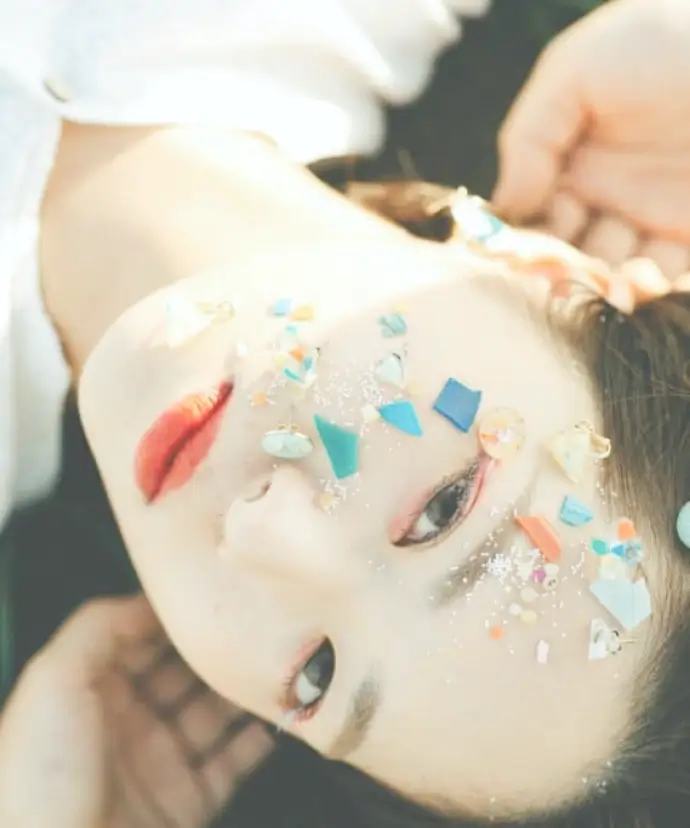
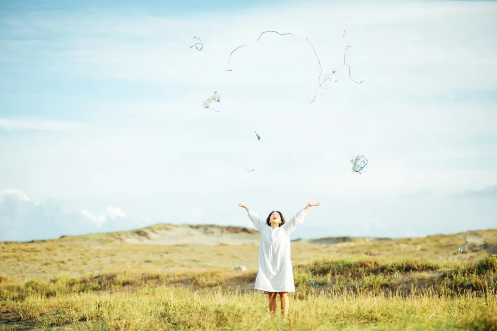
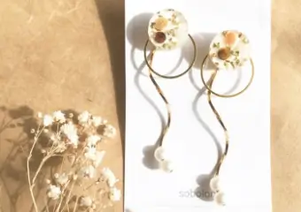
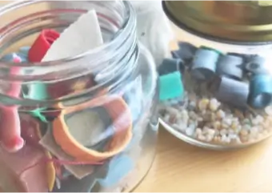
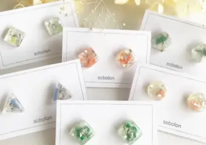
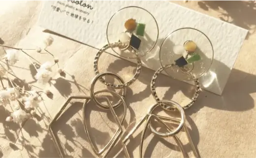
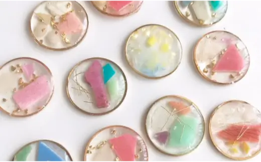
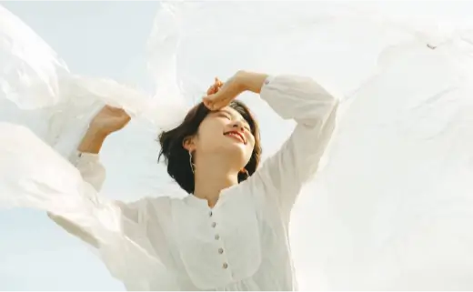
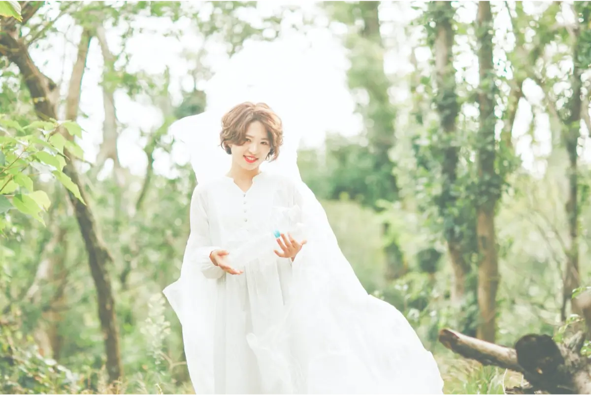

素材は海で採れた
マイクロプラスチック

個性あふれる
“可愛い”デザイン

世界にひとつだけの
一点物アクセサリー

「き業展」2日目！大盛況に終わりました\( ˆoˆ)/来てくださったみなさん本当にありがとうございました！やっぱり、地元多治見での出店はみ…

こんにちは！私は、「 “可愛い”で地球を守る！」をテーマに、昨今、環境問題として話題になっている、マイクロプラスチックを使ったアクセサリー…

こんにちは！“可愛い”で地球を守る！マイクロプラスチックアクセサリー【 sobolon】のリーダーひなこです！sobolonを知らない…

深刻化している環境問題に対して、否定や制限、禁止といった強制的な方法ではなく、明るく幸せな未来を目指して、「可愛い」「楽しい」の力を信じて、愛につながる選択を世の中に増やしていきます。
＊は入力必須項目です